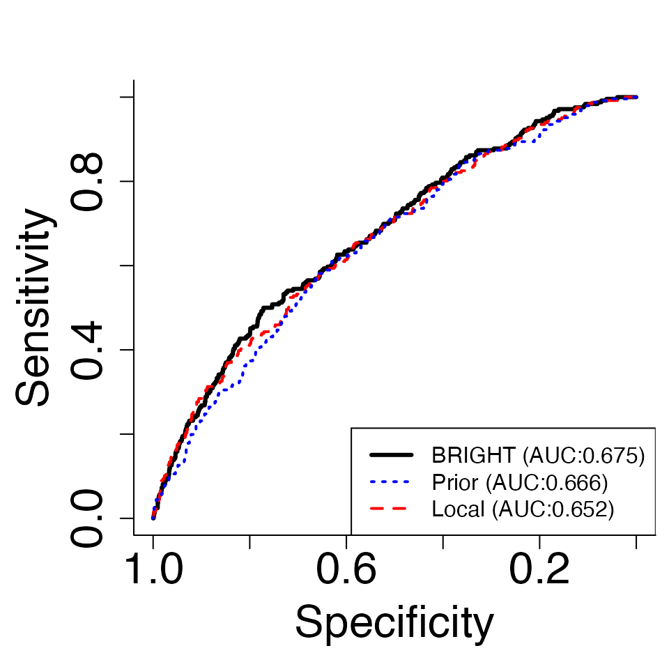

BRIGHT.RmdPolygenic risk scores (PRS) are commonly used tools for genetic risk prediction . However, these scores have been primarily based on European ancestry or East Asian ancestry cohort, with limited prediction power for minority cohorts (e.g. African ancestry), known as the lack of model transferability . In contrast, PRS constructed directly from minority ethnic data have long suffered small sample size and “the curse of dimensionality” . Hence, it would be desirable to design a procedure to transfer knowledge from the well-studied prior populations to the under-represented target population and optimally balance the information between them to account for the heterogeneity. A unique challenge here is that, due to the DataSHIELD constraint , individual data are not accessible across studies. Instead, only summary statistics, such as the SNP-trait correlation, are available, which precludes the application of existing transfer learning procedures. In response, we proposed a privacy-preserving technique, BRegman divergence-based Integrational Genetic Hazard Trans-ethnic (BRIGHT), using published summary statistics from different ethnic populations to improve the recalibration, discrimination, and prediction accuracy on the target minority cohort .
BRIGHT estimation procedure utilize Bregman-divergence to measure the difference between the populations and optimally balance the information from them. The method enjoys the following properties : (1) it controls the relative weight of the external information, identifying the most compatible ones and diminishing the weights of less relevant ones; (2) it is robust to model misspecification and incorporates various types of external risk scores, including risk scores derived from different statistical models or built upon different outcomes; (3) it accommodates that the covariate space may be different between data sources; (4) it requires less sensitive summary statistics to be obtained from both target and prior data sources, with no use of any sensitive individual-level data; (5) it achieves fine-mapping simultaneously in the process of PRS construction; (6) its objective function retains similar forms as the penalized regression and guarantees the computation efficiency; and (7) it incorporates pLASSO and LASSOsum as special cases.
The software package implements the above BRIGHT estimation procedure. Within the package, two versions of BRIGHT models are implemented: (1) BRIGHTi, which requires the individual-level target minority data and summary-level prior data; (2) BRIGHTs, which only requires the summary-level information from both target and prior data, therefore preserves patient privacy. Both BRIGHTi and BRIGHTs methods are efficiently implemented with general penalty structures including, group LASSO, group SCAD, and group MCP, which enable the group genetic marker fine mapping and incorporate LASSO, SCAD, and MCP penalties as special cases.
This vignette describes the usage of BRIGHT with summary level data and quantitative traits in R. There are additional vignettes that should be useful:
To integrate summary statistics without using individual-level data, while adjusting for the potential disparities between prior majority and target minority populations, we propose the following penalized objective function, \[\begin{align} Q_{BRIGHTs}(\boldsymbol\beta) =& B_{\widetilde{\boldsymbol\Sigma}}(\boldsymbol{\hat\beta}||\boldsymbol\beta) + \eta B_{\widetilde{\boldsymbol\Sigma}}(\boldsymbol{\check\beta}||\boldsymbol\beta) + p_{\lambda}(\boldsymbol\beta),\label{eq: BRIGHT} \end{align}\] where \(\boldsymbol{\hat\beta}\) and \(\boldsymbol{\check\beta}\) are the estimated coefficients obtained from published studies based on minority and majority populations; \(\widetilde{\boldsymbol\Sigma}\) is the regularized block-structured LD estimation from publicly available minority genotypes (e.g. 1000 genome project). \(B_{\widetilde{\boldsymbol\Sigma}}(\boldsymbol{\hat\beta}||\boldsymbol\beta)=(\boldsymbol{\hat\beta}-\boldsymbol{\beta})^\top\widetilde{\boldsymbol\Sigma}(\boldsymbol{\hat\beta}-\boldsymbol{\beta})/n\) is the Bregman-divergence between \(\boldsymbol{\hat\beta}\) and \(\boldsymbol{\beta}\), serving as an approximation of the negative log-likelihood from the minority data, which is not directly available due to DataSHIELD constraints; \(B_{\widetilde{\boldsymbol\Sigma}}(\boldsymbol{\check\beta}||\boldsymbol\beta)=(\boldsymbol{\check\beta}-\boldsymbol{\beta})^\top\widetilde{\boldsymbol\Sigma}(\boldsymbol{\check\beta}-\boldsymbol{\beta})/n\) is the Bregman-divergence between \(\boldsymbol{\check\beta}\) and \(\boldsymbol{\beta}\), and is an approximation of the Bregman-divergence in (). The latter approximation is achieved by \(\widetilde{\boldsymbol\Sigma}\approx\widehat{\boldsymbol\Sigma}\), which is widely deemed to be true in genetics studies .
For quantitative traits, \(\boldsymbol{\hat\beta}=\widetilde{\boldsymbol\Sigma}^{-1}\boldsymbol r\) ensures \(B_{\widetilde{\boldsymbol\Sigma}}(\boldsymbol{\hat\beta}||\boldsymbol\beta)\) to be a valid approximation of the OLS loss through \(\widetilde{\boldsymbol\Sigma}\approx\widehat{\boldsymbol\Sigma}\) , where \(\boldsymbol r=\frac{\boldsymbol y^\top\boldsymbol X}{n}\) is the marginal SNPs-trait inner product and a standardized version, \(\boldsymbol r^*=\frac{\boldsymbol y^{*\top}\boldsymbol X^*}{n}\), can be recovered from GWAS summary statistics with \(\boldsymbol X^*\) and \(\boldsymbol y^*\) being the standardized genotype and phenotype . We note, in this scenario, \(\boldsymbol{\hat\beta}\) is only presented for illustration purposes, the actual implementation does not require the inversion or invertibility of \(\widetilde{\boldsymbol\Sigma}\); furthermore, the BRIGHTs method will reduce to LASSOsum when \(\eta=0\) and \(p_{\lambda}(\boldsymbol\beta)\) is chosen as LASSO penalty. The pipeline of the BRIGHTs estimation procedure with quantitative traits and target minority GWAS summary statistics is presented in Fig.A, and this pipeline is used for the case study in Section .
We note that BRIGHT estimation procedure can incorporate a wide variety of summary-level information from the prior majority population for the construction of \(\boldsymbol{\check\beta}\): (1) when PRS coefficients from the prior majority population are available, they can be directly employed as \(\boldsymbol{\check\beta}\); (2) when only GWAS summary statistics from prior majority population are avialble, \(\boldsymbol{\check\beta}\) can be estimated through LASSOsum PRS method; (3) when individual-level data from the prior majority population can be accessed by some collaborators, \(\boldsymbol{\check\beta}\) can be estimated from LASSO regression and only the LASSO coefficient estimates need to be shared. In addition, \(\boldsymbol{\check\beta}\) is only required to contain a subset of markers in the target minority genotype, \(\boldsymbol X\), which makes the BRIGHTi estimation procedure more flexible than the current trans-ethnic PRS approaches.
BRIGHT requires the following R packages: Rcpp, Matrix, mvtnorm, BEDMatrix, grpreg. Install them by:
install.packages(c("Rcpp", "Matrix", "mvtnorm", "BEDMatrix", "grpreg"), dependencies=TRUE)For Windows and Mac users, it would be easiest to download the following binaries (Windows, Mac) and install using:
install.packages("/path/to/downloaded_binary_file", repos=NULL)If you are on Linux or you would like to compile from source, you can download the source codes BRIGHT_0.0.1.tar.gz. Mac users should refer to this page for the various dependencies required. Install then via:
install.packages("/path/to/downloaded_source.tar.gz", repos=NULL, type="source")If you have devtools, you can also type:
install_github("To be determined")or
install_github("To be determined")for the latest development version. Or you can clone the latest development version here and install yourself using devtools.
Most functions in BRIGHT impute missing genotypes in PLINK bfiles with a homozygous A2 genotype, which is the same as using the --fill-missing-a2 option in PLINK. It is the user’s responsibility to filter out individuals and SNPs with too many missing genotypes beforehand.
BRIGHTs group of methods utilize a wide variety of summary-level data from different populations to carry out transfer-learning. We accounted for Linkage Disequilibrium (LD) via a reference panel (1000 genome project as default). The reference panel is assumed to be in PLINK 1 format. Summary statistics are expected to be loaded into memory as a data.frame/data.table.
Below we discuss the required data and implementation tutorials separately for quantitative traits and binary traits.
For quantitative traits, BRIGHTs requires the GWAS summary statistics or marginal genotype-trait inner product, \(\frac{\boldsymbol X^\top\boldsymbol y}{n}\), from the target minority population, while from the prior majority populations either GWAS summary statistics, marginal genotype-trait inner product, or coefficients estimated from joint models (e.g. PRS or LASSO regression) can be used for model fitting. We note that more than 1 prior majority data can be incorporated in the BRIGHTs model.
First we read the minority summary statistics and majority summary statistics into R, and provide the ref names of the reference panel. If ref names are provided as “EUR”, “AFR”, “EAS”, “SAS” ,or “AMR”, then the default 1000 genome project reference panels will be used; otherwise ref needs to be provided as a directory to the plink1 format files (.bim, .bed, .fam).
library(BRIGHT)##
## Attaching package: 'BRIGHT'## The following object is masked from 'package:base':
##
## norm
### Read target minority GWAS summary statistics file or marginal genotype-trait inner product file###
# Read in target GWAS
Tind="GWAS"
Tss <- read.table("~/Desktop/research/Kevin He/PRS/Rewrite_Lassosum/example/SAS1.GWAS",header = T)
head(Tss)## CHR BP A1 A2 Sign N P
## 1 1 753405 A C 1 1760 0.3624
## 2 1 754192 G A 1 1760 0.3065
## 3 1 757640 A G 1 1760 0.4178
## 4 1 758626 T C 1 1760 0.5019
## 5 1 769223 G C -1 1760 0.6513
## 6 1 777122 T A 1 1760 0.5741
### Read prior majority GWAS summary statistics file, marginal genotype-trait inner product, or joint coefficient estimates, more than 1 prior majority data can be read in###
Pind=c("Coef")
Pss <- read.table("~/Desktop/research/Kevin He/PRS/Rewrite_Lassosum/example/EUR.Coef",header = T)
head(Pss)## CHR BP A1 A2 Coef
## 1 1 753405 A C 0.000000000
## 2 1 754192 G A 0.000000000
## 3 1 757640 A G 0.000000000
## 4 1 758626 T C 0.000000000
## 5 1 769223 G C 0.000000000
## 6 1 777122 T A 0.001384477
### Specify the PLINK file stub of the reference panel or "EUR", "AFR", "EAS", "SAS" ,or "AMR" ###
Tref <- "~/Desktop/research/Kevin He/PRS/Rewrite_Lassosum/example/SAS1"
Pref <- "~/Desktop/research/Kevin He/PRS/Rewrite_Lassosum/example/EUR"
### Read LD region file, only required if ref.bfile is provided as PLINK1 format ###
LDblocks <- "SAS" # This will use LD regions as defined in Berisa and Pickrell (2015) for the South Asian population and the hg19 genome build.
# Other alternatives available. Type ?BRIGHTs for more details. Reference: Berisa and Pickrell (2015)
Then, a preprocessing step is required to remove the SNPs that are not in the reference panel from all data, convert target data into marginal SNPs-trait inner product, convert prior data into joint coefficient estimates, and match the effect alleles between the reference panel and data.
dat <- PreprocessS(Tss, Tind, Tref, Pss, Pind, Pref, LDblocks)## Using user specified LD
## 1 source of prior information identified
## 5000 SNPs passed filtering for target data
## 5000 SNPs passed filtering for prior data 1Running BRIGHTs using standard pipeline with LASSO penalty on quantitative traits:
out <- BRIGHTs(data = dat, type.trait="quantitative", penalty="LASSO")When individual-level test data is available, BRIGHT package provide automated validation functions and generates evaluation plots:
# Read in target individual-level data
Testgeno <- "~/Desktop/research/Kevin He/PRS/Rewrite_Lassosum/example/SAS2"
Testpheno <- read.table("~/Desktop/research/Kevin He/PRS/Rewrite_Lassosum/example/SAS2_phe.fam")
head(Testpheno)## V1 V2 V3
## 1 0 711676 9.415242
## 2 0 711677 20.729158
## 3 0 711679 8.834436
## 4 0 711680 8.004271
## 5 0 711681 -11.331491
## 6 0 711682 -2.485393
# Perform testing
Val <- Valid.Ind(out, Testpheno, Testgeno)
# Plot MSPE and Cor plot
MSE_Cor.plot(Val)
# Plot MSPE and Cor plot
Density.plot(Val,Pct=0.9)
# Plot MSPE and Cor plot
ROC.plot(Val,Pct=0.9)
When summary test data is available, BRIGHT package provide automated validation functions for parameter fine-tunning:
# Read in test GWAS
Testind="GWAS"
Testss <- fread("Target_GWAS.txt")
head(Testss)
# Alternatively read in test marginal genotype-trait inner product
Testind="IProd"
Testss <- fread("Target_IProd.txt")
head(Testss)
# Perform testing
Val <- Valid.Sum(Testss, Testind, Testpheno, Testgeno)We note that summary level test data is only supported for quantitative traits